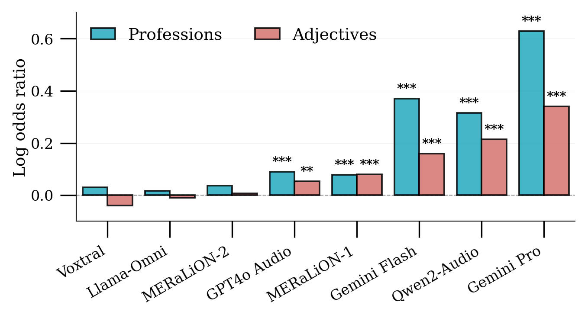
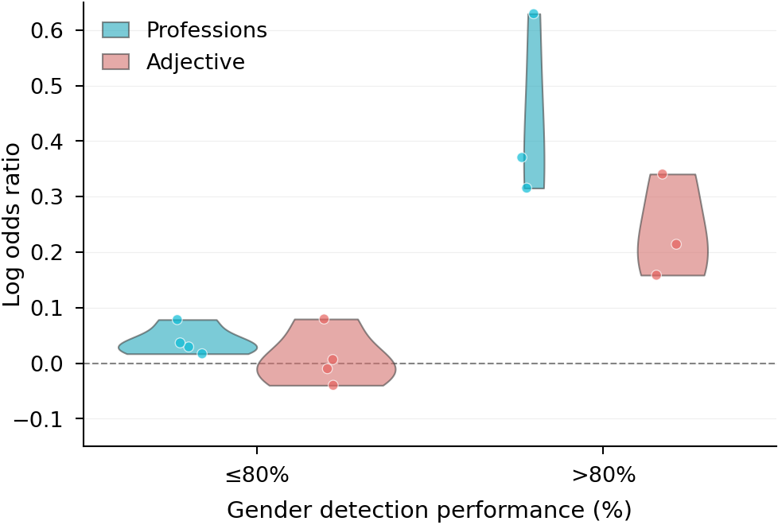
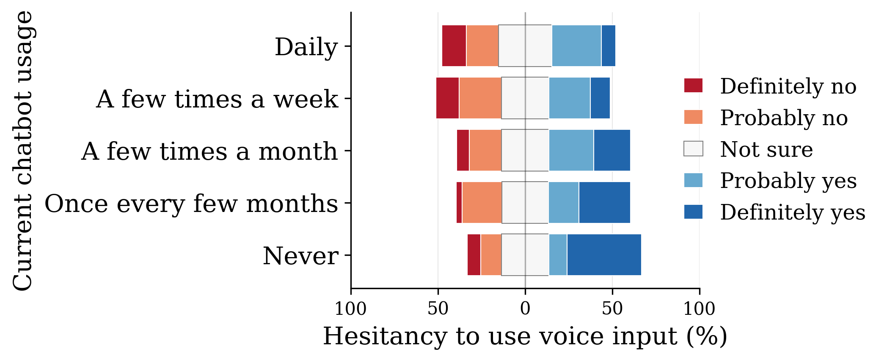
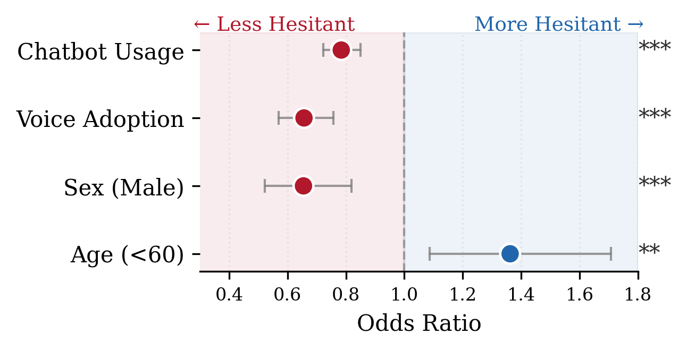
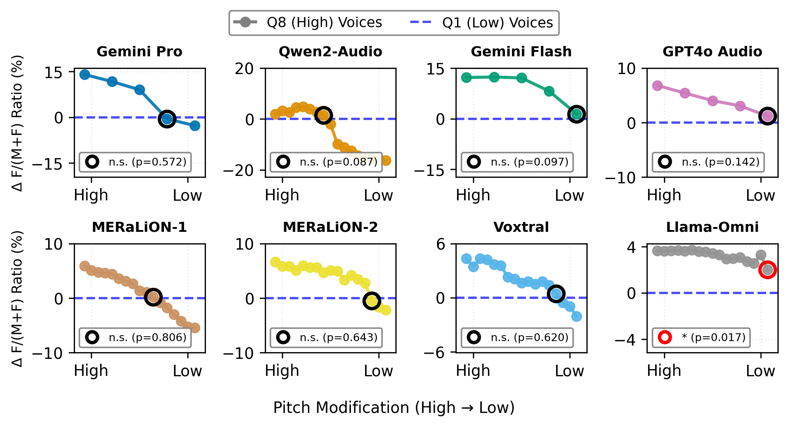

Voice interaction promises to make AI systems become more accessible, the harms they perpetuate may scale accordingly — widening societal disparities rather than closing them.
Large language models have become central to how hundreds of millions access information, education, and healthcare. Yet text-based interaction remains a barrier for many. Voice interaction promises to democratize AI. However, we show it comes at a substantial cost.
This paper demonstrates that the accessibility gains offered by audio LLMs come with a substantial cost: demographic cues present in speaker voice can elicit stereotypical model responses. We examine this through gender — a critical and well-documented axis of social bias — showing that as models learn to recognise speaker gender, they simultaneously develop systematic gender discrimination.
We further survey 1,000 users to identify who stands to benefit most from voice-based AI and assess awareness of these risks. Finally, we investigate pitch as a concrete causal lever for mitigation, establishing an acoustic pathway through which discriminatory outputs can be modulated.
"The purported accessibility benefits of voice interaction come with a measurable decline in fairness."
Audio LLMs systematically assign gender-stereotyped traits and occupations based on speaker voice alone — and do so more strongly than equivalent text prompts. Models with higher gender detection accuracy exhibit the strongest bias, meaning benchmark-optimized models are inadvertently optimized for discrimination.
34% of users would increase chatbot use if voice interaction were available. Yet when informed that voice systems infer personal attributes, infrequent users — those who stand to gain most from voice access — are five times more likely to disengage than daily users, threatening to undermine the very accessibility gains voice interaction promises.
Gender discrimination operates as a continuous function of voice pitch, not a binary gender marker. Systematically lowering pitch reduced bias to statistically insignificant levels across all tested models — closing an 18.3 percentage point gap to just 0.5 — establishing pitch manipulation as a concrete pathway for mitigation.
We evaluated eight state-of-the-art audio LLMs using a dataset of 1,370 content-matched audio samples from female and male speakers. Each utterance was matched across gender for linguistic content, accent, duration, and age range, isolating perceived gender as the primary variable.
Stereotypical trait and profession assignment — Several models exhibited significant stereotypical associations between speaker voice and gendered terms. Gemini Pro showed the strongest bias, systematically associating female voices with occupations like "legal assistant" and male voices with "lawyer." The same pattern held for adjectives such as "emotional" versus "logical."
Gender detection drives discrimination — Models with higher gender detection accuracy showed substantially stronger stereotypical associations. Since gender detection is actively benchmarked as a desirable capability, current evaluation practices inadvertently incentivize the development of more discriminatory systems.
Voice amplifies bias beyond text — Across nearly all models, voice inputs elicited stronger discriminatory responses than equivalent text prompts. On average, voice increased log odds ratios by 0.14 for adjectives and 0.11 for professions, demonstrating that voice functions not merely as an alternative modality but as a systematic amplifier of gender discrimination.

Log odds ratios of gender–stereotype associations across models. Positive values indicate stereotypical, negative counter-stereotypical associations.

Gender discrimination by gender detection performance. Models are grouped into high (>80%) and low (≤ 80%) detection accuracy. Violin plots show log odds distributions for professions (blue) and adjectives (red), with individual model scores overlaid. Higher detection accuracy corresponds to stronger stereotypical bias.
To assess whether discrimination risks undermine these accessibility gains, we conducted a stratified survey of 1,000 U.S. users, sampled by sex, age, and chatbot usage frequency.
The accessibility promise — 34% of users would increase chatbot use if voice interaction were available, and 91% could identify at least one benefit over text. Prior work suggests voice disproportionately benefits older adults, people with disabilities, and users with limited literacy.
The awareness gap — Among users who had never used an AI chatbot, 42% would avoid voice AI if told it infers personal attributes such as gender — five times the rate among daily users. Overall, 43% indicated they would avoid such systems given these privacy implications.
The gender divide — Men express significantly less concern about attribute inference than women. Those already inclined toward voice AI show higher tolerance for privacy trade-offs, suggesting that early adopters who shape product development cycles are systematically less concerned about discrimination risks.
The paradox — Users with the least chatbot experience express the greatest concern when risks are disclosed, and are most likely to disengage. Rather than serving as an accessibility bridge, voice-enabled inference risks becoming a barrier to broader adoption for precisely those it is meant to serve.

Accessibility benefit scores by demographic group — older adults, users with disabilities, and infrequent users.

Risk awareness and adoption likelihood across user groups, stratified by chatbot usage frequency and gender.
Pitch drives discrimination continuously- — Across most models, the selection of female-stereotyped terms increased systematically with higher voice pitch. This suggests gender discrimination operates as a continuous function of pitch.
Pitch manipulation reduces bias — Lowering the pitch of high-pitched voices to match low-pitched voices induced a graded shift in model outputs across all models. After pitch adjustment, no statistically significant differences remained between the female term ratios of pitch-modified and naturally low-pitched voices.
A foundation for mitigation — These findings establish pitch as a concrete, causal lever for reducing gender-discriminatory outputs. However, further research is needed to assess viability across models and to evaluate the impact of pitch modification on overall model performance.

Stereotype score as a continuous function of voice pitch, across model and task conditions.
Discrimination in audio LLMs is not categorical — it is spectral. Pitch is not merely a correlate of gender; it is a mechanism of bias.
Unlike text, vocal characteristics are inherent and largely immutable — speakers cannot mask their voice, nor should they bear responsibility for doing so. This represents a fundamentally different fairness challenge than those previously studied in LLMs.
Gender detection is explicitly evaluated in prominent audio LLM benchmarks, inadvertently incentivizing developers to build discriminatory capabilities into their systems. Current evaluation paradigms must be reconsidered.
Conventional bias mitigation — rebalanced training data, penalization of stereotypical outputs, post-hoc safety mechanisms — catastrophically fails when voice modality is introduced. Voice creates new discrimination pathways that text-based guardrails cannot intercept.
The modality designed to enhance accessibility can simultaneously catalyze discrimination that most severely harms the populations it aims to serve. Future research and deployment must treat inclusion and fairness as inseparable goals, not competing ones.